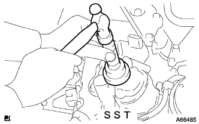

Installation of oil pump seals |
| 1. Installation of oil pump seals |
Apply a small amount of MP grease No.2 to the lip of the new oil seal.
|  |
Use the SST to even hit the oil seal to the end of the oil pump evenly.
| 2. Crankshaft Dampa SUB-ASSY installation |
Combine the straight pin hole of the crankshaft damp and the crankshaft straight pin and attach the crankshaft damper.
 |
Use SST to fix the crankshaft damper and tighten the bolt.
| 3. Installation of engine mounting insulator SUB-ASSY RH |
Operate the jack and attach the engine mountain mounting in theleurer RH with five bolts and nuts.
| 4. Bane pump V belt (power steering belt) installation |
The V belt is temporarily attached to each pulley.
| 5. Vane pump V belt (power steering belt) adjustment |
 |
Adjust the tension of the V belt and tighten the bolt B for adjustment.
Tighten the fixing bolt A.
| 6. Fan & Alternator V belt installation |
The V belt is temporarily attached to each pulley.
| 7. Fan & Alternator V belt adjustment |
 |
Use a hub nut wrench or bar to draw the alternator to the vehicle front side to adjust the tension of the Juan & Alternator V belt.
 |
Tighten the adjustment bolt A and then tighten the fixing bolt B.
| 8. V belt tension / deflection quantity inspection |
 |
Tensions and quantity inspection
| When installing a new one [MM] | At the time of inspection [MM] | |
|---|---|---|
| V belt | 8.0-9.0 | 12.5-13.5 |
| P/S belt | 8-10 | 11-13 |
| When installing a new one [N {kgf}] | At the time of inspection [N {kgf}] | |
|---|---|---|
| V belt | 700-800 {71-82} | 300-400 {31-41} |
| P/S belt | 441-539 {45-55} | 245-343 {25-35} |
| 9. Lon tire RH installation |
| 10. Engine oil replenishment |
| 11. Engine oil leak inspection |
| 12. Engine Anda cover RH installation |
With two screws and two bolts, install the engine undercover RH.
Tighten the nut.